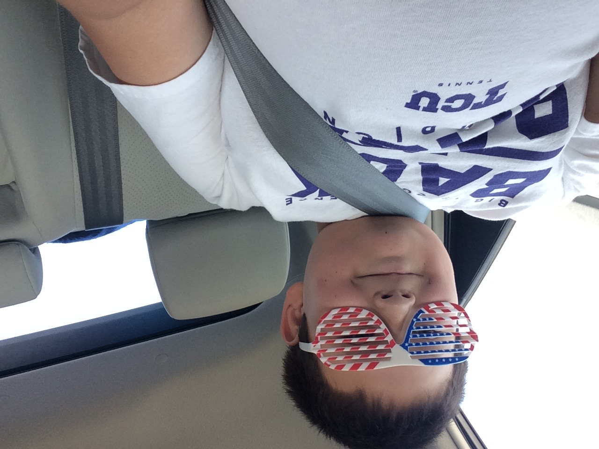
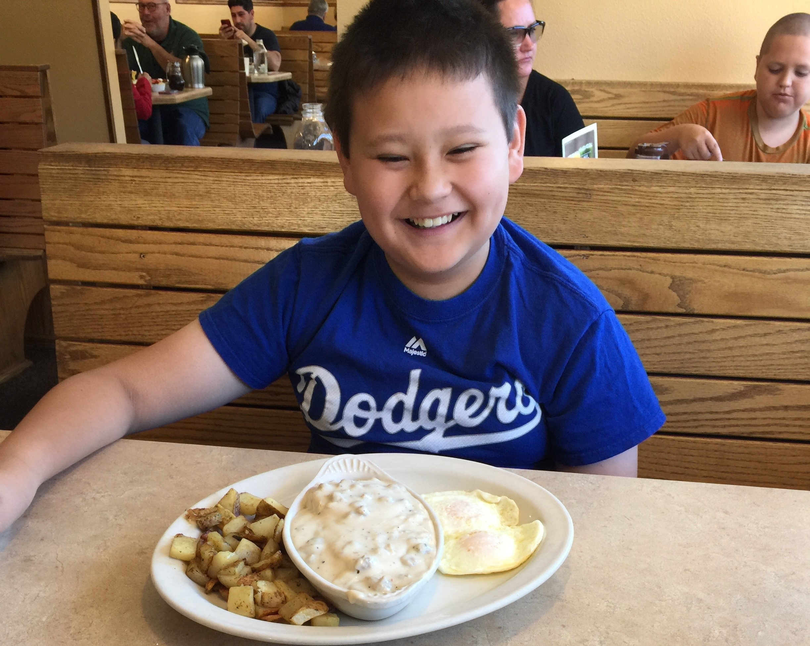
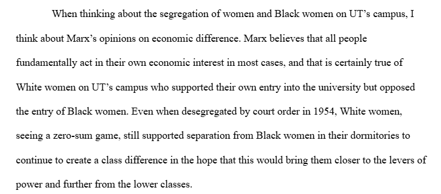

One of my very first memories was my attending a Trump campaign event at the age of nine. Under the roaring sun of the Texas summer afternoon, I waited in line to enter the convention center in downtown Fort Worth, donning my Trump-branded merch with a book to be autographed. In 2015, my family approached with skepticism the news that a prominent TV personality had entered the Republican presidential primary. As multi-generational Republicans and hardline religious conservatives, we did not immediately think that Trump was in the end going to be our man. Trump had plenty of very questionable scandals, and there were far more earnestly pious candidates in the mix, especially Huckabee and Santorum. However, there was something different about Trump. We were quickly mesmerized by his tweets and speeches in which he said things that establishment Republicans were afraid to. We always felt as if the intellectual class of moderates that had been towards the top of the party, especially McCain and Romney, long ignored the priorities of their real base of support—us Christians. In time, his words made us feel seen and amplified our resentment towards the status quo in which murderous abortions had become rampant, homosexual marriage had been more tolerated and even encouraged, and prayer and traditional Biblical belief had been dwindling and even disfavored in the public sphere. We wanted a Republican who wouldn’t reach across the aisle, who wouldn’t see eye to eye with the demonic forces in society, who wouldn’t stand by as our country turned into Sodom. We were willing to ignore Trump’s past because we thought he would do what we want, even if he didn’t explicitly say it. He did say the type of things that demonstrated his willingness to radically break with politics as normal. We loved when he would promise to deport illegals, threaten criminals, and do or say anything that Rubio and Kasich wouldn’t. And of course, he was a master negotiator and businessman who would finally get the budget under control after years of Obama’s deficit spending. We quickly became his earliest and most ardent supporters. We alone would make America that city on a hill.

What it’s like growing up in the American far-right.
I am among the first children to have been fully raised by MAGA Republicans, which I believe to be uncommon in academia. I’m aware there are plenty of political scientists who have Trump-supporting family or friends. However, being fully steeped from adolescence in the culture and belief system of the relatively new but powerful MAGA movement is a perspective which very few in my line of work share, in part because one would have to be very young to have this background. As a consequence of being born in 2006, I have absolutely no firsthand experience of politics before MAGA. Indeed, I have been in MAGA culture for my entire sapient existence. Additionally, very few MAGA youth will go to college, let alone a doctoral program, let alone at an unattainably elite school. I hope this means that I bring rare and inimitable insight into the modestly sized section of the American public that has so rapidly usurped the politics of this country and that is certainly not going away, owing to the penchant of MAGA Republicans to reproduce so abundantly.
My parents made sure I was the most overt Trump supporter in my fifth-grade class, sending me to my Bible elementary school wearing my Trump-Pence white T-Shirt as often as they could. Most of the other kids said their families were interested in Cruz, the native son, or Carson, or Kasich; infrequently, some of their parents were even Democrats! I paid no mind to this as I handed out leaflets from my church to attend the local pro-life talk or Planned Parenthood picket.
Perhaps I didn’t end up becoming a MAGA Republican myself because I so disdained sitting outside on those cold January mornings. Every Saturday, our church group, a good dozen adults and plenty of intentionally cute children, set up our camping chairs and placards around the driveway of the Planned Parenthood in Benbrook. My job was to flag down entering cars to pull beside us. An adult would ask the mother questions while I waited to hand them a flyer as well as a prayer card or pocket Bible if she said she was Christian. This was surprisingly effective; I would say around half of the cars actually took our leaflets, though nobody we met would ever come to our pro-life events. We celebrated with a trip to a diner if we successfully convinced a mother to keep their baby.

Even though I come from a MAGA background, in truth I’m still not the absolute modal MAGA youth. One half of my family is White American, the other half are staunch anti-Communist Chinese immigrants. I would say, however, that MAGA is probably more ethnically diverse than liberals might expect. More importantly, my parents went to college and also wanted me to go to college to become a law-yer. It is uncommon for MAGA Republicans to desire higher education. Finally, I’m not actually a Trump supporter. As I entered my teenage years, and with access to the internet and friends at public high school, I ceased believing in Trump’s policies and started disliking him personally. Toward the end of my childhood, our house was filled with arguments about the validity of the 2020 election and of Trump’s increasingly anti-democratic rhetoric. At least I never became a Democrat. These days I’m largely ambivalent towards the outcome of any election, though I know comparatively little about the politics of the Democrat party. I would keep these biases in mind when I opine about MAGA Americans. However, my early life was completely consumed by the unique ideas of the MAGA movement—I grew up culturally MAGA, in the same way one might be culturally related to an ethnicity or religion. I guess this is why I use MAGA to describe myself in this piece, as a marker of my people group, even though I don’t personally support Trump.
What it’s like going to college in the American far-left.
Because my life was so constantly filled with party politics, it was only natural for me to become enamored with its study during my college education. As I distanced myself from my family, I also distanced myself from their expectations of me. During my freshman year in college, a particular class I wanted to take in journalism was full, so on a whim I decided to take a social science methods class. This would significantly alter the course of my life by teaching me to be able to answer my own questions rigorously. I suppose it is in part by accident that I, very improbably in hindsight given my background, became a social scientist.
After bouncing around a couple of colleges, I was overjoyed to be admitted to UT-Austin, with an external scholarship enabling me to attend without incurring any debt. It was at UT where I was first introduced to establishment academia and to the profession that I was aspiring to enter. I didn’t end up being very impressed. As a student of the premier Marxist/Leftist school in the American South, I was introduced to and required to comment favorably on all of the popular critical theorists. I have therefore, through my mandatory core education, read through all of academia’s orthodox ideas: Marx, Foucault, Derrida, Butler, hooks, Said, queer theory, reformist and revolutionary Leftism, etc.

UT is where I lost my faith in higher education, an idealized faith that I had developed despite my upbringing. The class of out-of-state intellectuals imported to UT, as much as that is the norm in universities, brought with them certain ideas about what teaching in Texas is like. I realized very quickly that many professors, in an attempt not to constantly lament being hired in Texas, developed a fetish or fantasy of converting a Republican student. Of course, UT has very few Republican students. I was once told that if I was not “open to conversion”, I would not get a good grade in the class. As I consistently showed up in classes taught by liberal-to-leftist professors as the only not liberal-to-leftist student, some came to constantly pressure me to accept their ideas. Sometimes I would just write the paper or in seminar say the things they wanted, especially if I got the sense I would get a bad grade if I didn’t. I usually zoned out as we discussed violent revolution to overthrow the American government or criticized the most recent American policy change. I always ruminated on just how disconnected the academic classroom was from the public, I suppose whom they might call the proletariat, whom they so desperately identified themselves with.
It was in some sense uncomfortable and in another sense heartbreaking to see my people become the focus of the ire of my peers and superiors. As I listened to the academics ignorantly and indignantly disparage and strawman MAGA Republicans in a way that would be socially frowned upon with any other group, I came to understand that I had left my own echo chamber to join another. Even among political scientists, people whom I assumed to have been familiar with the increasingly popular literature on affective polarization, I was stunned to find that even they were somehow unaware of or were remarkably apathetic and unconcerned about their own polarization.1 I would say these people were as polarized and separated from the other half of America as the anybody in a polarization study. To summarize their criticism, most of these people believed MAGA Republicans were, by and large, stupid, unintelligent, uninformed, hateful, gullible, deceived, rural rednecks addicted to Fox News, with no critical thought, who hated democracy, and whose political beliefs and criticisms of present government were likewise misinformed and illegitimate. It was ironic to see that people who claim to care for popular sovereignty and for the common man spoke with such disdain and infantilization about anybody who voted for Trump, which was most recently 51% of American voters. As much as university academics can egotistically believe themselves to be so superior to average Americans, ultimately there are so few of them, and they are so off-putting, that those 51% of Americans won’t notice or like what they have to say. I do think that if social scientists are unable or unwilling to seriously think about or engage with the half of the American public that voted for Trump, or about the smaller portion that is perennially MAGA, they will become increasingly and consistently out of step with the people that they study.
I don’t know, perhaps I’m talking about these people too harshly. And not all professors were like this. Plenty of people invested a lot in me so that I would have a better future. But large portions of my undergrad education sucked. I honestly became so disillusioned I considered not applying for the PhD. I began to think that nothing that I say or observe will really change anything. However, I was already heavily invested through my classes and projects in going to grad school, so I applied anyway. I then very improbably got into Stanford.
What I want to change.
Even though I so resented my undiversified education in leftist theory, I suppose it is ultimately a good thing that my silo was broken. It’s good that I’m hearing more and more the viewpoints from all sides of the political spectrum. When I moved from conservative suburban Texas to Austin2, I was confronted with a very different community with very different people. I suppose it is divine providence that I will move again to the political antipode of my hometown—northern California. I can say earnestly that I will now be exposed to very different politics and that I will probably learn a lot from my stint in the San Francisco area. Even though I hope my graduate education is not as combative or one-sided as my undergraduate education was. I am not hopeful. Which brings me to why I am writing this at all.
I know to some extent that part of why I’m going to Stanford is to bring my perspective into a very different space. However, I really do not want to be in the same situation that I was in during my undergrad in which I felt as if I couldn’t say anything that was against the academic norm. I come from a background that is radically different from many other political scientists. This very deeply informs my perspective on how I study Americans. When engaging with peers or professors who were either establishment Democrats or socialists, I always found myself making very different observations than they were. I don’t want to be pressured into losing that perspective as I was in undergrad.
I’m writing this blog largely for my own benefit, so that I can effectively communicate my observations on present American politics from my perspective. I just want to write what I actually think.
I also hope that somebody reads my stuff and learns something new about the half of America I come from. The political gap in the country is getting wider so I hope that the people that I know can read what I have to say and have a more diversified base of knowledge just as I have gained more diverse knowledge from engaging with the half of America that I myself know little about.
I intend to opine on elections, social cleavages, party politics, and present research in political science. I’m not fundamentally offering a conservative or liberal point of view; just as in my formal research I try to be as level-headed and unbiased as possible. However, we are well aware that scientists from different backgrounds come to different conclusions 3, so I hope that my own yields different observations than that of mainstream academia. I also want to document my experience with the culture shock I will likely face when I move to California. I think it will probably be very interesting for me to document this because so few people these days move from red states to blue states.4 I hope that somebody finds any of this useful in understanding from both perspectives the political gap in America.